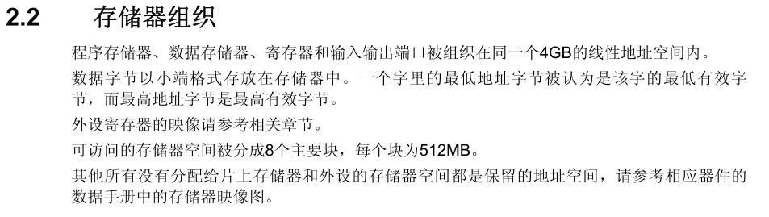
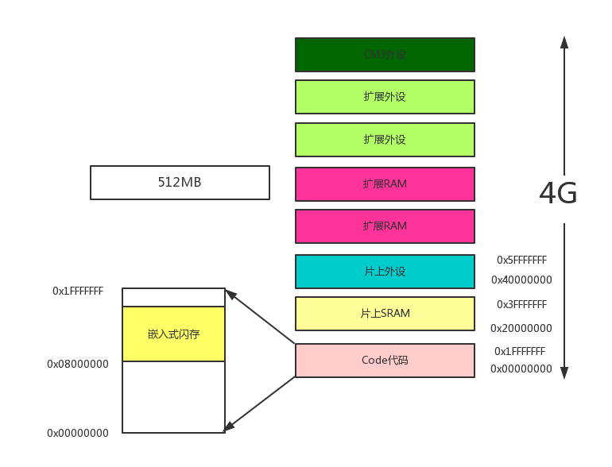
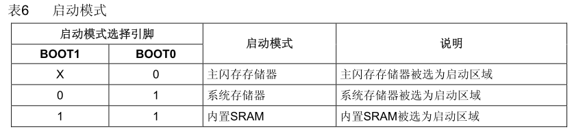

STM32启动过程的理解
标签：
对于STM32启动的过程，想象中应该是这样的上电--->启动---->main()
由于现在的集成开发环境，对于C语言之下的东西似乎都被屏蔽了，另外用编程也大都用封装好的库函数，连对寄存器的了解都少了一大步，但是这样总是让人觉得根基不够稳重。今天就整理下启动代码的理解，补充一下。
1.STM32存储器的组织
STM32作为32bit的操作系统，自然是2^32的寻址范围，所以正好是4GB的空间，再看一下对这个4GB是怎么分配的

8*512MB=4GB，图上很清晰了，一共分为 Code区 SRAM 外设 扩展 CM3外设等部分。而其中的Code中间的有一部分便是嵌入式闪存，也就是常说的Flash。不同的STM32型号Flash大小不一样，但是其实的地址都是0x08000000。

2.启动方式
在STM32F10xxx里，可以通过BOOT[1:0]引脚选择三种不同启动模式。

- 很明显，第一种就是我们最常用的模式，从Flash启动，主闪存存储器被映射到启动空间(0x0000 0000)，但仍然能够在它原 有的地址(0x0800 0000)访问它，即闪存存储器的内容可以在两个地址区域访问，0x0000 0000或0x0800 0000。
- 第二种：从系统存储器启动，系统存储器被映射到启动空间(0x0000 0000)，但仍然能够在它原有的 地址(互联型产品原有地址为0x1FFF B000，其它产品原有地址为0x1FFF F000)访问它。 这个是什么呢？这个就是我们用串行接口下载程序啦。因为里面已经固化了Bootloader【自举程序】。
- 第三种：从SRAM启动，一般用于调试
3.启动代码
分析对象 : startup_stm32f10x_hd.s 代码就不全放上来了，我一段段摘录和解释
Stack_Size EQU 0x00000400
AREA STACK, NOINIT, READWRITE, ALIGN=3
Stack_Mem SPACE Stack_Size
__initial_sp
这是进来的第一段，先解释下指令 ：
- EQU 就相当于#define，上面就是Stack_Size为0x400字节
- AREA 用法 ： AREA 段名 属性1 属性2 属性N
AREA伪指令用于定义一个代码段或数据段。其中，段名若以数字开头，则该段名需用“|”括起来，如：|1_test| 。
属性字段表示该代码段（或数据段）的相关属性，多个属性用逗号分隔。常用的属性如下：
— CODE 属性：用于定义代码段，默认为READONLY 。
— DATA 属性：用于定义数据段，默认为READWRITE 。
— READONLY 属性：指定本段为只读，代码段默认为READONLY 。
— READWRITE 属性：指定本段为可读可写，数据段的默认属性为READWRITE 。
— ALIGN 属性：使用方式为ALIGN表达式。在默认时，ELF（可执行连接文件）的代码段和数据段是按字对齐的，表达式的取值范围为0～31，相应的对齐方式为2表达式次方。
— COMMON 属性：该属性定义一个通用的段，不包含任何的用户代码和数据。各源文件中同名的COMMON段共享同一段存储单元。
所以上文就是定义一个数据段，其段名为STACK，可读可写，2^3=8字节对齐【NOINIT：指定此数据段仅仅保留了内存单元，而没有将各初始值写入内存单元，或者将各个内存单元值初始化为0】
- Stack_Mem 栈空间的开辟：开辟一个空间大小为Stack_Size的内存空间
- 标号 __initial_sp 其实就是在开辟的空间的顶部做一个标记，记录下这个地址，以后这个地址就代表这个空间的顶部，也就是栈顶啦。
Heap_Size EQU 0x00000200
AREA HEAP, NOINIT, READWRITE, ALIGN=3
__heap_base
Heap_Mem SPACE Heap_Size
__heap_limit
有了前面这一段就非常好理解了，就是申请了大小为0x400字节的堆空间，其中堆空间的开始是_heap_base 它的顶部是_heap_limit。 另外由于这两段的可读写数据，所以实际上他们都是在SRAM上长的
PRESERVE8
THUMB
这样个好理解，1个就是8字节对齐，另外一个是使用THUMB指令
AREA RESET, DATA, READONLY
EXPORT __Vectors
EXPORT __Vectors_End
EXPORT __Vectors_Size
接下来又是申请拉，但是这次申请的只读数据段 ， 这里也是挺奇怪的，不知道改成AREA RESET, CODE, READONLY 会不会一样，以为实际来说应该就是code了，这里的地址空间地址就是0x08000000啦
然后EXPORT，【在程序中声明一个全局的标号__Vectors，该标号可在其他的文件中引用】
_Vectors DCD __initial_sp
DCD Reset_Handler
DCD NMI_Handler
........
DCD DMA2_Channel2_IRQHandler ; DMA2 Channel2
DCD DMA2_Channel3_IRQHandler ; DMA2 Channel3
DCD DMA2_Channel4_5_IRQHandler ; DMA2 Channel4 & Channel5
__Vectors_End
__Vectors_Size EQU __Vectors_End - __Vectors
当当，这个就是传说中的中断向量表了，DCD 可以理解为&，类比下，&a，在C里面什么意思呢，就是取地址喽，那么就是将__initial_sp的地址，也就是栈空间的顶部地址，这个信息，存放在0x08000000里面，同理，复位中断向量不用说了，就在0x08000004里面啦。最后是一个中断向量的大小了
AREA |.text|, CODE, READONLY
这个好理解，定义了代码段，代码段的段名为.text，只读
; Reset handler
Reset_Handler PROC
EXPORT Reset_Handler [WEAK]
IMPORT __main
IMPORT SystemInit
LDR R0, =SystemInit
BLX R0
LDR R0, =__main
BX R0
ENDP
OK，终于到了主角了，PROC.....EDNP 代表 程序开始和结束
- EXPORT Reset_Handler [WEAK] 关于这个[weak] 。 相当于说 如果其他地方有Reset_Handler这个函数，那你就别用我了，去用那个复位中断服务程序吧，没得选了，你最后选我就可以了。
- 下面就是 需要调用的两个函数啦
- 通过LDR将地址给R0，BLX就是有3个功能 1.跳转到SystemInit 2.改变当前指令THUMB--->ARM 3.回来
- 而最后呢，跳转到__main【C/C++标准实时库的__main函数】 ，通过__main最后走进main，进入到C的世界中。
其实这里有个疑惑 ，就是这个程序是存在哪里的，是接着上面的中断向量表继续存在Flash中么。
最后这个代码段还有很多代码，但是都形如
NMI_Handler PROC
EXPORT NMI_Handler [WEAK]
B .
ENDP
其实这些都是留给需要的时候写的， B . 代表的跳转到自身，也就是死循环了，除非你在其他地方定义了NMI_Handler函数
Base Addr Size Type Attr Idx E Section Name Object
Base Addr Size Type Attr Idx E Section Name Object
0x08000000 0x00000130 Data RO 519 RESET startup_stm32f10x_hd.o
0x0800228c 0x00000024 Code RO 520 .text startup_stm32f10x_hd.o
0x20000038 0x00000400 Zero RW 517 STACK startup_stm32f10x_hd.o
这里我们可以看到我们建立的3个AREA具体在存储器的哪里。但是我很奇怪为什么没有heap
Global Symbols
Symbol Name Value Ov Type Size Object(Section)
__Vectors_Size 0x00000130 Number 0 startup_stm32f10x_hd.o ABSOLUTE
__Vectors 0x08000000 Data 4 startup_stm32f10x_hd.o(RESET)
__Vectors_End 0x08000130 Data 0 startup_stm32f10x_hd.o(RESET)
Reset_Handler 0x0800228d Thumb Code 8 startup_stm32f10x_hd.o(.text)
也就是说 在中断向量表中 0x08000004 这个地址里面存放了 0x0800228d 【也就是Reset_Handler这个入口地址】
标签：
踩
(0)
赞
(0)
举报
评论 一句话评论（0）
共0条
登录后才能评论！